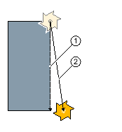
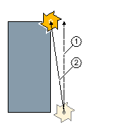

When you want to program a straight line in polar coordinates, you can use the "Straight Polar" function.
A straight line in the polar coordinate system is defined by the length L and the angle α. Depending on the selected machining plane, the angle refers to another axis. The direction in which a positive angle points also depends on the machining plane.
Machining plane | Turning | Face | Peripheral |
|---|---|---|---|
Reference axis for angle | Z | X | Y |
Positive angle in direction of the axis | X | Y | Z |
The tool traverses a straight line from its current position to the programmed end point at the machining feedrate or at rapid traverse.
The 1st line in polar coordinates entered after the pole must be programmed in absolute dimensions. You can program any additional lines or arcs also in incremental dimensions.
Radius compensation
Alternately, you can implement the straight line with radius compensation. The radius compensation acts modally, therefore you must deactivate the radius compensation again when you want to traverse without radius compensation. Where several straight line blocks with radius compensation are programmed sequentially, you may select radius compensation only in the first program block.
For the first straight line with radius compensation, the tool approaches the starting point without radius compensation and the end point with radius compensation, i.e. if a vertical path is programmed, a slope will be traversed. The compensation does not act over the entire traverse path until the second programmed straight line with radius compensation. The reverse effect occurs when radius compensation is deactivated.
|  Straight line with selected radius compensation |  Straight line with deselected radius compensation |
If you want to prevent deviation from the programmed path, you can program the first straight line with radius compensation or with deactivated radius compensation outside the workpiece. Programming without coordinate data is not possible.